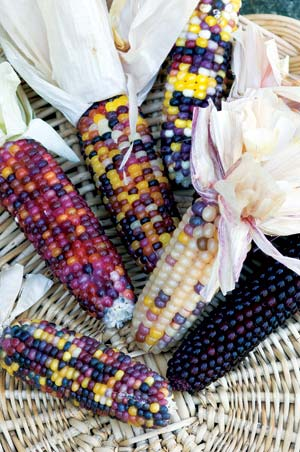
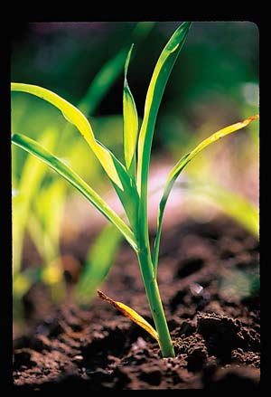
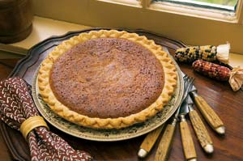
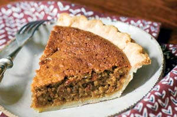
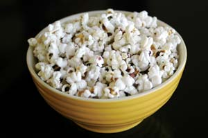
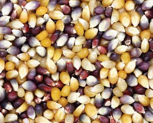

Who says popcorn kernels have to be yellow? We’ve grown so accustomed to microwave popcorn and the hybrid corn varieties developed for high yields and big kernels, that a whole world of long-forgotten heirloom popcorn varieties are waiting to be rediscovered.
Popcorn is one of the oldest types of corn grown in the Americas, and there are many heirloom varieties with flavors and textures so remarkable that they make the industrial stuff taste like Styrofoam peanuts. I put ‘Cherokee Long Ear’ popcorn at the top of the heirloom list, not just because it’s highly decorative with vivid color combinations, but also because it offers a range of culinary uses well beyond the common snack. Like many traditional popcorns, it can be ground for cornmeal, eaten young like sweet corn, or used in soups. You can even make popcorn pie! (See recipe, below.)
So what’s the story on Cherokee popcorn? Popcorn is thought to have developed in Mexico many thousands of years ago and then spread through the rest of North America and into South America. Some Native American groups may have been growing it earlier than other types of corn because of its many culinary applications. The Cherokee Nation probably acquired the popcorn through trade contacts with some other group, but they tinkered with it and made the variety what it is today. It’s different from most popcorns in that the kernels come in a rainbow of shades: yellow, white, purple, pink, blue, rose, red, black, olive, orange and more, which is why this corn is so popular as a decoration. A certain number of cobs will be almost uniform in color with dark reds or blacks predominating. These kernels can be set aside and grown by themselves, so that eventually you can have your own designer colors of popcorn.
By popcorn standards, Cherokee’s ears are considered long because most traditional popcorn varieties grow on cobs from 2 1/2 to 4 inches in length. Cherokee ears are 5 to 7 inches long, and the cobs are skinny, almost like cigars. The kernels are tiny, yet the popped corn is surprisingly large.
Another reason I like ‘Cherokee Long Ear’ is the plants themselves are small (for corn), growing 6 to 8 feet in height, so this is one corn that can be grown in small gardens without much trouble. Furthermore, the short corns like this are ideal for the “three sisters” planting arrangement where pole beans are grown on the corn, and pumpkins grow around the corn/bean hills. For three sisters to be successful, you should plant your corn in hills about 4 feet apart in each direction, using about six plants per hill. Corn prefers neutral soil (6.6 to 7.5 pH), so if you live in an area with a lot of pine or oak trees you may want to test your soil; the test may indicate you should add lime to the hills before you plant.
While popcorn is generally resistant to ear damage by birds, it develops low on the plants, thus making it more vulnerable to raccoons. If raccoons are a problem in your area, just wrap the developing cobs with sturdy plastic netting. Tie it tight enough to discourage raccoons (the netting gets tangled in their teeth), but not so tight that it prevents the cobs from expanding as they grow. Of course, raccoons were not a problem for the Cherokee because any raccoons wandering into their cornfields ended up in the stewpot.
‘Cherokee Long Ear’ isn’t a long season corn, so it will grow most anywhere in the United States. You can plant the corn after the last frost, but it’s better to wait until the ground is warm because you don’t want the seed to rot, which sometimes happens in cool and rainy conditions. ‘Cherokee Long Ear’ matures to dry ears in 90 to 100 days, so in short season areas you need to know your local frost dates.
For harvesting the corn as sweet corn (or “green corn,” as it was called in colonial times), check the cobs to see how kernel development is coming. It’s ready right before the corn begins to take on dark colors. Pierce a kernel with your fingernail; if it releases white milk, it’s ready. Green corn is so sweet it can be eaten raw right there in the field. Some people consider it a delicacy. Otherwise, let the corn ripen and dry on the stalks both for seed saving and for use as cornmeal or popcorn. Dry the popcorn on the cobs for a few weeks after harvest, then remove the kernels and put them in airtight containers in the freezer.
Popcorn is best when frozen because the reaction between the cold corn and the hot oil will yield more popped kernels and more evenly sized popcorn.
Now for the fun part! It was indeed a challenge to decide what sort of recipe to include with this article. There are so many choices, but space simply won’t allow. So, I have settled on popcorn pie. Yes, it has popped corn in it, and it’s the perfect finale for just about any dinner. It is somewhat cakelike and goes great with strong coffee and vanilla ice cream. (Any variety of unsalted popcorn can be used.)
4 cups freshly popped popcorn (unsalted)
1 cup toasted peanuts (unsalted)
2 tbsp toasted sesame seeds
2 eggs, separated
1/2 cup honey
1/4 cup black strap molasses
1/4 cup water or strong coffee
1/4 cup creamy peanut butter
2 tbsp melted butter (unsalted)
1 9-inch prepared pie shell
Preheat oven to 350 degrees. Chop popcorn in a food processor until reduced to the size of oatmeal. Pour popcorn, along with the small crumbs and dust, into a large work bowl. Chop peanuts in the processor until they reach a coarse cornmeal texture. Add the processed peanuts and sesame seeds to the popcorn.
In a separate work bowl, beat egg yolks until lemon in color, then add the honey, molasses, water or coffee, peanut butter and melted butter. Beat until peanut butter is completely dissolved, then add to the popcorn mixture. Stir with a paddle to form a thick, sticky batter.
In a separate bowl, beat egg whites until stiff peaks form, then fold into the batter. Pour the batter into the prepared pie shell and bake 40 to 45 minutes, or until the pie is set in the center. Serve chilled or at room temperature. This recipe yields eight servings.
Southern Exposure Seed Exchange
P. O. Box 460
Mineral, VA 23117
Heirloom Vegetable Gardening: A Master Gardener’s Guide to Planting, Seed Saving and Cultural History by William Woys Weaver, now on CD. If you want to explore the fabulous flavors, fascinating history and amazing diversity of vegetables, this is the book to start with. Food historian and Mother Earth contributing editor Will Weaver profiles 280 heirloom varieties, with authoritative growing advice and incredible recipes. First published in 1997, Heirloom Vegetable Gardening has since been out of print, with used copies selling online for as much as $300. We are proud to present the original text, with color photos, as a digital book on CD-ROM. Order now.
|
 ROB CARDILLO Popcorn is both decorative and delicious |
 ROB CARDILLO : Plant ‘Cherokee Long Ear’ anytime after the last frost, but make sure you allow 90 to 100 days for itto mature before frost hits again. |
 ROB CARDILLO Popcorn has a wide range of culinary uses - try it in pie! |
|
 ROB CARDILLO Popcorn pie is great with vanilla ice cream and strong coffee. |
 ALISON ROGERS The hulls of popped Cherokee corn display the kernels’ range of attractive colors. |
 ISTOCKPHOTO/ SUZANNAH SKELTON : Take a break from boring yellow corn and discover the brilliant hues of ‘Cherokee Long Ear’. |